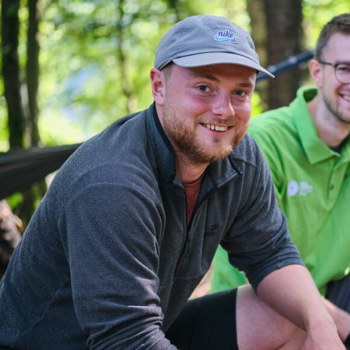

Why Should I Volunteer?

Sam Gennawey
An RV nomad volunteering at National Park Service sites shares how immersive experiences in history and nature can transform visitors’ perspectives and create memorable connections.
Learn more

Miles Tewson
A history graduate turned park keeper explains how volunteering builds transferable skills, deepens community ties, and opens doors to new opportunities.
Learn more